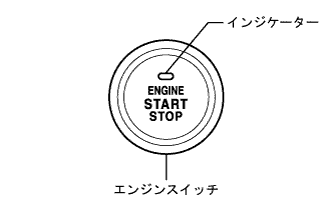

Smart Entry & Start System (Start System) Function Inspection |
| 1. Power Source Switching Function Inspection |
Engine Switch Operation Function Inspection
Inspect the power source switching control by engine switch operation, brake pedal operation and shift position.
| Shift Position | Brake Pedal Operation | Engine Switch Operation (Press →) |
|---|---|---|
| P | Released | Repeats IG OFF → ACC ON → IG ON → IG OFF |
| P | Released | Engine running → IG OFF |
| P | Depressed | IG OFF → Engine start |
| P | Depressed | ACC ON → Engine start |
| P | Depressed | IG ON → Engine start |
| P | Depressed | Engine running → IG OFF |
| N | Released | Repeats IG OFF → ACC ON → IG ON → ACC ON |
| N | Released | Engine running → ACC ON |
| N | Depressed | IG OFF → Engine start |
| N | Depressed | ACC ON → Engine start |
| N | Depressed | IG ON → Engine start |
| N | Depressed | Engine running → ACC ON |
| Other than P and N | Released | Repeats IG OFF → ACC ON → IG ON → ACC ON |
| Other than P and N | Released | Engine running → ACC ON |
| Other than P and N | Depressed | IG OFF→IG ON |
| Other than P and N | Depressed | ACC ON→IG ON |
| Other than P and N | Depressed | Engine running → ACC ON |
Power Source Switching Function Inspection Other than Engine Switch Operation
Inspect that when left for 1 hours or more with ACC ON and the shift position in P, the power changes from ACC ON → IG OFF.
| 2. Power Source Status Indication Inspection |
 |
Inspect the engine switch power source indicator display.
| Engine Switch Status | Indicator Display |
|---|---|
| IG OFF (except for the *1 condition) | Off |
| ACC ON (except for the *1 condition) | Amber illuminated |
| IG ON (except for the *1 condition) | Amber illuminated |
| Engine start standby (*1) | Green illuminated |
| After engine start | Off |
If the following malfunctions are detected, the indicator blinks.
| Detected Malfunction | Indicator Display |
|---|---|
| Steering lock catching | Green blinking |
| Steering lock ECU internal malfunction | Amber blinking |
| Main body ECU internal malfunction | Amber blinking |